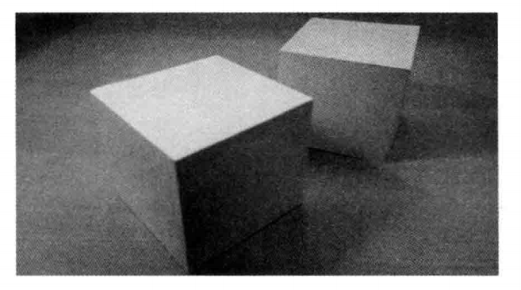

对应《WebGL编程指南》第七章 31-DepthBuffer、32-Zfighting
要点：对象的前后关系、隐藏面消除、深度冲突
知识点
一、正确处理对象的前后关系
目前为止，已经掌握编写代码移动视点，设置可视空间，从不同的角度观察三维对象，处理三角形缺一角的情况。但是，仍然还存在一个问题：在移动视点的过程中，有时候前面的三角形会“躲”到后面的三角形之后，这一节将会研究这一问题。
1.1 WebGL的绘图原理
在真实世界中，如果你将两个盒子一前一后放在桌子上，如下图，下面的盒子会挡住部分后面的盒子。

回顾一下示例程序 PerspectiveView 的效果，绿色三角形的一部分被黄色和蓝色三角形挡住了。看上去似乎是 WebGL 专为三维图形学设计，能够自动分析处三维对象的远近，并正确处理遮挡关系。

遗憾的是，事实没有想象的那么美好。默认情况下，WebGL 为了加速绘图操作，是按照顶点在缓冲区中的顺序来处理它们的。前面所有的示例程序我们都是故意先定义远的物体，后定义近的物体，从而产生正确的效果。
比如在上一节 PerspectiveView_mvp.js中，我们按照如下顺序定义了三角形的顶点和颜色数据：
1 | var verticesColors = new Float32Array( |
WebGL 按照顶点在缓冲区中的顺序来进行绘制。后绘制的图形将覆盖已经绘制好的图形，这样就恰好产生了近处的三角形挡住远处的三角形的效果。
为了验证这一点，我们将缓冲区中三角形顶点数据的顺序调整一下，把近处的蓝色三角形定义在前面，然后是中间的黄色三角形，最后是远处的绿色三角形，如下所示：
1 | var verticesColors = new Float32Array( |
运行程序，你就会发现本该出现在最远处的绿色三角形，不自然地挡住了近处的黄色和蓝色三角形:
WebGL 在默认情况下会按照缓冲区中的顺序绘制图形，而且后绘制的图形覆盖先绘制的图形，因为这样做很高效。如果场景中的对象不发生运动，观察者的状态也是唯一的，那么这种做法没有问题。但是如果，比如你希望不断移动视点，从不同的角度看物体，那么你不可能事先决定对象出现的顺序。
1.2 隐藏面消除
为了解决这个问题，WebGL 提供了隐藏面消除功能。这个功能会帮助我们消除那些被遮挡的表面（隐藏面），你可以放心地绘制场景而不必顾及各物体在缓冲区中的顺序，因为那些远处的物体会自动被近处的物体挡住，不会被绘制出来。这个功能已经内嵌在 WebGL 中了，你只需要简单地开启这个功能就可以了。
开启隐藏面消除功能，需要遵循以下两步：
- 开启隐藏面消除功能（
gl.enable(gl.DEPTH_TEST)） - 在绘制之前，清除深度缓冲区（
gl.clear(gl.DEPTH_BUFFER_BIT)）
第1步所用的 gl.enable()函数实际上可以开启 WebGL 中的多种功能，其规范如下：
第2步，使用 gl.clear(）方法清除深度缓冲区。深度缓冲区是一个中间对象，其作用就是帮助WebGL 进行隐藏面消除。WebGL 在颜色缓冲区中绘制几何图形，绘制完成后将缓冲区显示到 canvas 上。如果要将隐藏面消除，那就必须知道每个几个图形的深度信息，而深度缓冲区就是用来存储深度信息的。由于深度方向通常是Z轴方向，所以有时候我们也称为Z缓冲区。
在绘制任意一帧之前，都必须清除深度缓冲区，以消除绘制上一帧时在其中留下的痕迹。如果不这样做，就会出现错误的结果。我们调用 gl.clear()函数，并传入参数 gl.DEPTH_BUFFER_BIT 清除深度缓冲区。
1 | gl.clear(gl.DEPTH_BUFFER_BIT) |
当然，还需要清除颜色缓冲区。用按位或符号 | 链接这两个参数，并作为参数传入函数中：
1 | gl.clear(gl.COLOR_BUFFER_BIT | gl.DEPTH_BUFFER_BIT) |
与 gl.enble()函数对应的还有 gl.disable()函数，其规范如下所示(略)，前者启用某个功能，后者则禁用之。
示例程序名为 DepthBuffer.js，它在 PerspectiveView_mvpMatrix.js 的基础上，加入了隐藏面消除的相关代码。注意，缓冲区中顶点的顺没有改变，程序一次按照近处，中间，远处的顺序绘制三角形。程序运行的结果和 PerspectiveView_mvpMatrix 完全一样。
二、深度冲突
隐藏面消除是 WebGL 的一项复杂而又强大的特性，在绝大多数情况下，它都能很好地完成任务。然而，当几何图形或物体的两个表面极为接近时，就会出现新的问题，使得表面看上去斑斑驳驳的，如下图所示。这种现象被称为深度冲突。现在，我们来画两个Z值完全一样的三角形。
之所以会产生深度冲突，是因为两个表面过于接近，深度缓冲区有限的精度已经不能区分哪个在前，哪个在后了。严格地说，如果创建三维模型阶段就对顶点的深度值加以注意，是能够避免深度冲突的。但是，当场景中有多个运动者的物体时，实现这一点几乎是不可能的。
2.1 多边形偏移
WebGL 提供一种称为多边形偏移的的机制来解决这个问题。该机制将自动在Z值加上一个偏移量，偏移量的值由物体表面相对与观察者视线的角度来确定。启用该机制只需两行代码：
- 启用多边形偏移：
gl.enable(gl.POLYGON_OFFSET_FILL) - 在绘制之前指定用来计算偏移量的参数:
gl.polygonOffset(1.0, 1.0)
第1步调用了 gl.enable()启用多边形偏移，注意启用隐藏面消除用到的也是该函数，只不过两者传入了不同的参数。第2步中的函数 gl.polygonOffset()的规范如下：
实例代码2核心部分：
1 | // 启用多边形偏移 |
可见，所有顶点的Z 坐标值都一样，为 -0.5，但是却没有出现深度冲突现象。
在代码的其余部分，我们开启了多边形偏移机制，然后绘制了一个绿色的三角形和一个黄色的三角形。两个三角形的数据存储在同一个缓冲区中，所以需要格外注意 gl.drawArryas()的第2个和第3个参数。第2个参数表示开始绘制的顶点的编号，而第3个参数表示该次操作绘制的顶点个数。所以，我们先画了一个绿色三角形，然后通过 gl.polygonOffset()设置了多边形偏移参数，使之后的绘制受到多边形偏移机制影响，再画了一个黄色三角形。运行程序，你将看到两个三角形没有发生深度冲突。
实例
代码1
1 | //DepthBuffer.js |
效果
代码2
1 | // Vertex shader program |
效果
Tips: Please indicate the source and original author when reprinting or quoting this article.